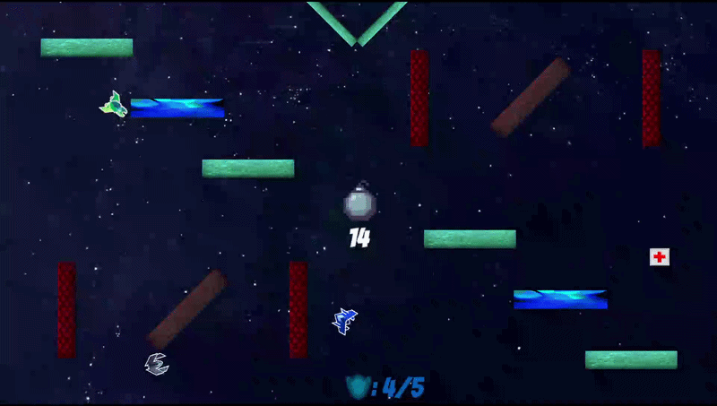
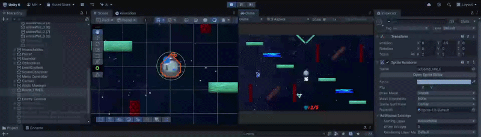

2D GAME DEVELOPMENT • FALL 2025
Galactic Bomb Defusal Battle!
Defeat the enemy ships while preventing a bomb from exploding in outer space!
Play Galactic Bomb Defusal Battle! ↗Project Overview
In this game, your goal is to get through each level by defeating the enemy ships while also preventing a bomb from exploding. If the bomb explodes or the enemy ships defeat you, it's game over! This game was created mostly through using an asset pack provided by our professor. I decided to expand my original top-down game idea for the final project in MAGD 272 - Game Development.
My Contributions
One of my main edits to an already existing script in the asset pack was the for the bomb, which is one of the primary obstacles for the player. The bomb has a timer that counts down, and once it expires, it causes the scene to reset. If the player shoots at or runs into the bomb, the timer restarts. The timer will progressively get shorter after each new level as an increase in difficulty. Once all enemy ships are defeated, the bomb layer that can kill the player disappears and the bomb layer that can be defused appears and acts as a key item that the player collects in order to trigger the next level. Another edit I made were to the top-down movement scripts attatched to the enemy ships. After each level, the enemy ships movement, projectile speed, projectile shoot rate, and health increase by consistent values. This provides a difficulty increase after each new level. Overall, this project really helped me gain an understanding of working with different scenes, layers, scripts, animations, audio, and more in Unity.
Gameplay and Showcase


Team & Credits
This game was a solo project made up of assets from online and what was provided by my professor. All assets used are not created by me.